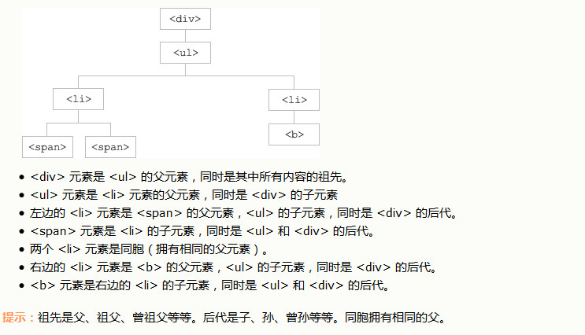

jQuery 遍历，意为“移动”，用于根据其相对于其他元素的关系来“查找”(或选取)HTML 元素。以某项选择开始，并沿着这个选择移动，直到抵达您期望的元素为止。
图示解释：

举例：
jQuery parent() 方法
parent() 方法返回被选元素的直接父元素。该方法只会向上一级对 DOM 树进行遍历。
1 <!DOCTYPE html>
2 <html>
3 <head>
4 <meta charset="utf-8">
5 <style>
6 .ancestors *{
7 display: block;
8 border: 2px solid lightgrey;
9 color: lightgrey;
10 padding: 5px;
11 margin: 15px;
12 }
13 </style>
14 <script src="jquery-1.12.0.min.js">
15 </script>
16 <script>
17 $(document).ready(function(){
18 $("li").parent().css({
19 "color":"red",
20 "border":"1px solid green"
21 })
22 });
23 </script>
24 </head>
25 <body>
26
27 <div class="ancestors">
28 <div style="width:500px;">div (曾祖父元素)
29 <ul>ul (祖父元素,li的父元素)
30 <li>li (父元素)
31 <span>span</span>
32 </li>
33 </ul>
34 </div>
35
36 <div style="width:500px;">div (祖父元素)
37 <p>p (父元素)
38 <span>span</span>
39 </p>
40 </div>
41 </div>
42 </body>
43 </html>jQuery parents() 方法
parents() 方法返回被选元素的所有祖先元素，它一路向上直到文档的根元素 (<html>)。
1 <!DOCTYPE html>
2 <html>
3 <head>
4 <meta charset="utf-8">
5 <style>
6 .ancestors *
7 {
8 display: block;
9 border: 2px solid lightgrey;
10 color: lightgrey;
11 padding: 5px;
12 margin: 15px;
13 }
14 </style>
15 <script src="jquery-1.12.0.min.js">
16 </script>
17 <script>
18 $(document).ready(function(){
19 $("li").parents('div').css({
20 "color":"red",
21 "border":"1px solid green"
22 })
23 });
24 </script>
25 </head>
26 <body>
27
28 <div class="ancestors">
29 <div style="width:500px;">div (曾祖父元素)
30 <ul>ul (祖父元素,li的父元素)
31 <li>li (父元素)
32 <span>span</span>
33 </li>
34 </ul>
35 </div>
36
37 <div style="width:500px;">div (祖父元素)
38 <p>p (父元素)
39 <span>span</span>
40 </p>
41 </div>
42 </div>
43 </body>
44 </html>jQuery parentsUntil() 方法
parentsUntil() 方法返回介于两个给定元素之间的所有祖先元素。
1 <!DOCTYPE html>
2 <html>
3 <head>
4 <meta charset="utf-8">
5 <style>
6 .ancestors *
7 {
8 display: block;
9 border: 2px solid lightgrey;
10 color: lightgrey;
11 padding: 5px;
12 margin: 15px;
13 }
14 </style>
15 <script>
16 $(document).ready(function(){
17 $("span").parentsUntil("div").css({"color":"red","border":"2px solid red"});
18 });
19 </script>
20 </head>
21 <body class="ancestors"> body (曾曾祖父元素)
22 <div style="width:500px;">div (曾祖父元素)
23 <ul>ul (祖父元素)
24 <li>li (父元素)
25 <span>span</span>
26 </li>
27 </ul>
28 </div>
29 </body>
30 </html>jQuery children() 方法
children() 方法返回被选元素的所有直接子元素。
该方法只会向下一级对 DOM 树进行遍历。
1 <!DOCTYPE html>
2 <html>
3 <head>
4 <meta charset="utf-8">
5 <style>
6 .ancestors *
7 {
8 display: block;
9 border: 2px solid lightgrey;
10 color: lightgrey;
11 padding: 5px;
12 margin: 15px;
13 }
14 </style>
15 <script src="jquery-1.12.0.min.js"></script>
16 <script>
17 $(document).ready(function(){
18 $("li").children().css({"color":"red","border":"2px solid red"});
19 });
20 </script>
21 </head>
22 <body class="ancestors"> body (曾曾祖父元素)
23 <div style="width:500px;">div (曾祖父元素)
24 <ul>ul (祖父元素)
25 <li>li (父元素)
26 <span>span</span>
27 </li>
28 </ul>
29 </div>
30 </body>
31 </html>Query find() 方法
find() 方法返回被选元素的后代元素，一路向下直到最后一个后代。
<!DOCTYPE html>
<html>
<head>
<meta charset="utf-8">
<style>
.ancestors *
{
display: block;
border: 2px solid lightgrey;
color: lightgrey;
padding: 5px;
margin: 15px;
}
</style>
<script src="jquery-1.12.0.min.js"></script>
<script>
$(document).ready(function(){
$("div").find('li').css({"color":"red","border":"2px solid red"});
});
</script>
</head>
<body class="ancestors"> body (曾曾祖父元素)
<div style="width:500px;">div (曾祖父元素)
<ul>ul (祖父元素)
<li>li (父元素)
<span>span</span>
</li>
</ul>
</div>
</body>
</html>